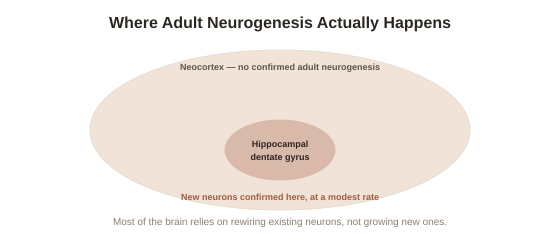

Chapter 3: Can the Adult Brain Grow New Neurons?
Chapter 2 covered how existing neurons strengthen and weaken their connections to each other. A more provocative question follows directly: can the adult brain also grow entirely new neurons, not just rewire the ones it already has? For decades the answer given confidently in textbooks was no — and that answer turned out to be wrong in one specific, important brain region, while remaining broadly true almost everywhere else. This chapter covers that nuanced, genuinely still-debated middle ground honestly.
The dogma, again, and the first cracks in it
Adult neurogenesis (the formation of entirely new neurons in the brain after development is complete, as opposed to simply modifying existing neural connections) was long considered essentially impossible outside of a brief developmental window — a natural extension of the "fixed brain" dogma Chapter 1 introduced. That began to change in the 1990s, when researcher Fred Gage and colleagues used a technique involving a chemical marker (BrdU) that gets incorporated into newly dividing cells, administered to terminal cancer patients for unrelated diagnostic reasons, and found clear evidence of new neurons forming in the adult human hippocampus — direct, if narrow, evidence that the old dogma didn't hold universally.
Where it clearly happens: the hippocampus
The strongest, most replicated evidence for adult human neurogenesis is specifically in the dentate gyrus, a subregion of the hippocampus already familiar from Chapter 1's taxi driver research — the same broader structure, though a different specific subregion, involved in forming new memories. Multiple independent research groups, using different methodologies, have confirmed ongoing neuron formation here throughout adult life, though the rate appears to decline somewhat with age. This matters directly for this arc's larger argument: the same hippocampal region shown to grow structurally larger through sustained learning (Chapter 1) is also one of the few brain regions confirmed to generate genuinely new cells in adulthood, not merely reorganize existing ones.

Where the field has genuinely walked back earlier claims
It's important to be honest about a real scientific reversal here, in keeping with this library's running commitment to not overstate settled science: a widely publicized 2018 study led by researcher Arturo Alvarez-Buylla found no clear evidence of ongoing neurogenesis in adult human hippocampus samples, directly contradicting some earlier work and triggering a still-unresolved debate. Subsequent studies have produced mixed results, with methodology — how tissue is preserved, which specific markers are used, how old the donors were — appearing to explain at least some of the disagreement. The current honest summary, reflecting where active researchers in the field actually stand, is that adult hippocampal neurogenesis in humans is very likely real but occurs at a much lower rate than earlier estimates suggested, and its functional significance for actual behavior and memory remains an open, actively studied question rather than settled fact.
Why most of the brain doesn't do this — and why that's not actually the discouraging part
Outside the hippocampus (and one other small region involved in smell), convincing evidence for adult neurogenesis in humans is largely absent — the neocortex, responsible for most higher cognitive function, does not appear to generate meaningful numbers of new neurons in adulthood. This might sound like it undercuts the whole premise of this topic, but it doesn't: Chapter 2 already established that synaptic strengthening and weakening — rewiring existing neurons' connections, not manufacturing new ones — is the dominant mechanism behind most adult plastic change, including everything covered in Chapter 1's taxi driver study outside the specific neurogenesis-capable hippocampal subregion. New neuron growth is a genuine, real bonus mechanism in a narrow location, not the primary engine of adult plasticity generally.
What actually determines the rate, in the region where it does happen
Within the hippocampus, the rate of new neuron formation is itself responsive to experience — animal studies (and more limited human evidence) link higher rates of hippocampal neurogenesis to physical exercise, and lower rates to chronic stress, a connection researchers believe may partly explain both exercise's antidepressant effects and chronic stress's negative impact on memory and mood. This gives neurogenesis its own version of this arc's central theme: even the one clearly plasticity-capable-via-new-cells region responds to deliberate, sustained behavior, not to passive waiting.
Try this
Ideas for noticing or testing this in your own life.
- Notice how "the brain can grow new neurons" gets used in popular writing — often stated as a brain-wide, unqualified fact. This chapter's more precise version (real, but concentrated in one hippocampal region, and still genuinely debated in its details) is a good test of how carefully a given source is handling neuroscience claims generally.
- If exercise is something you can add to your routine, the neurogenesis-exercise link is one of the more concrete, mechanistic reasons available for why it plausibly supports mood and memory — not just general health advice, but a specific, evidenced pathway.
Worth pulling on?
A few loose threads from this chapter — if any of these genuinely grab you, that's a good sign of where to go next.
- If most plasticity is rewiring rather than new-cell growth, a dramatic illustration of just how far that rewiring can go shows up after brain injury. → The subject of the next chapter: cortical remapping after damage, including phantom limb phenomena.
- Chronic stress's negative effect on hippocampal neurogenesis connects to a broader body-and-mind research thread elsewhere in this library. → Already in the library: Trauma and the Body covers chronic stress's physiological effects in more depth.